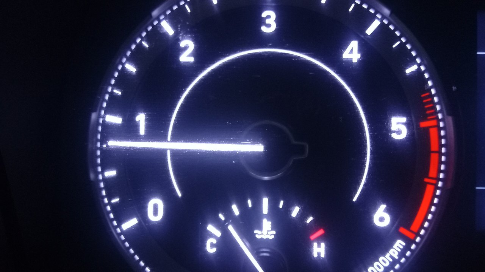
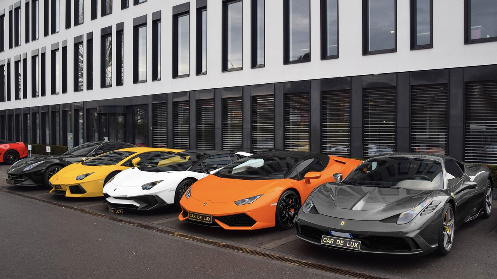
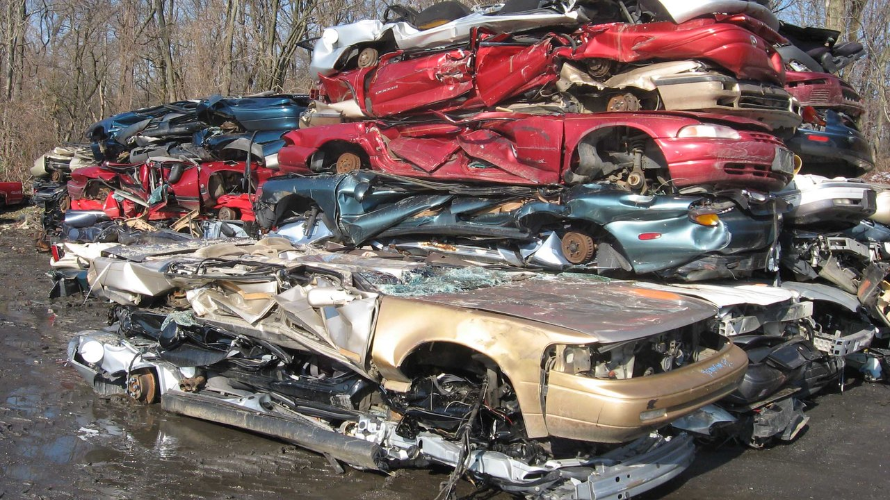
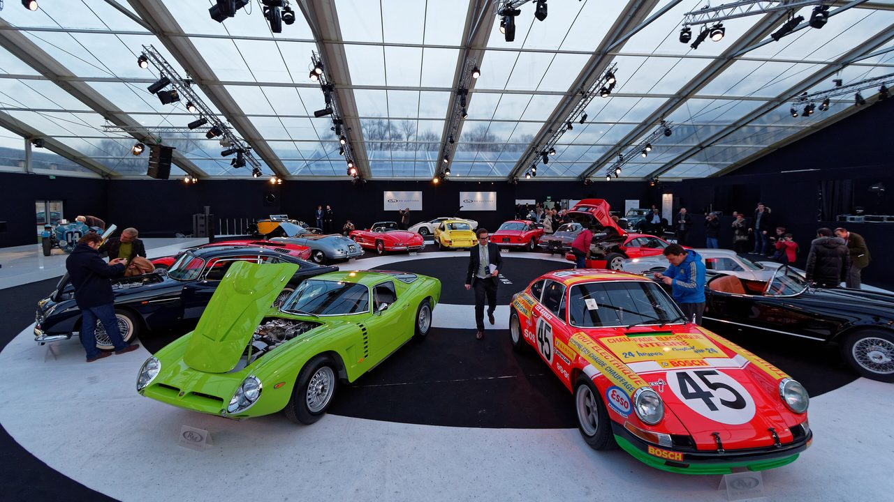
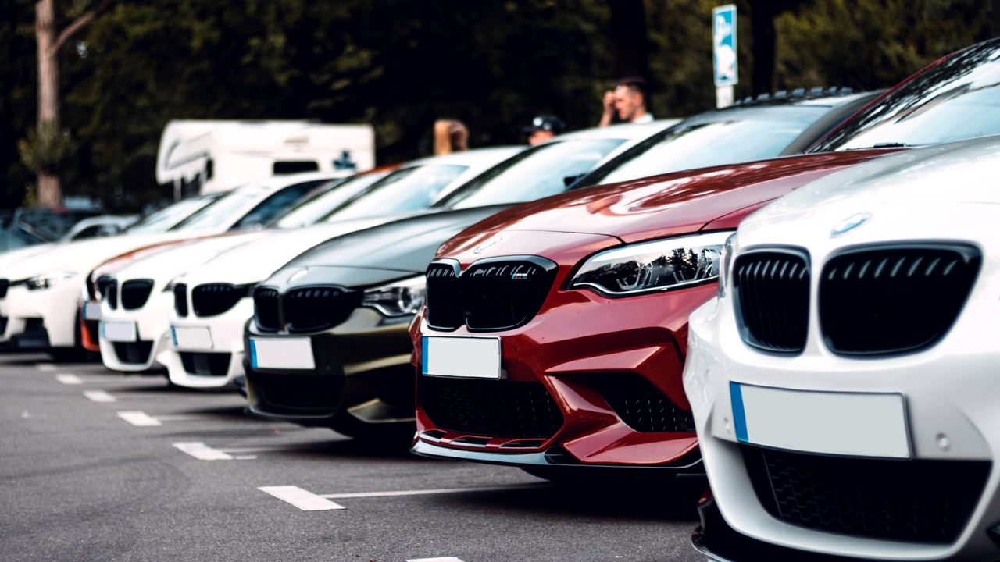

1 jucător
Sus sau jos
Mai mulți cai sau mai puțini? Mai grea sau mai ușoară? O greșeală și s-a terminat.
Jocuri FRQ
Mai mulți cai sau mai puțini? Mai grea sau mai ușoară? O greșeală și s-a terminat.

Două mașini pe rundă, opt sloturi de umplut. Cea mai bună combinație câștigă.

Unul pune o mașină pe turometru, restul ghicesc unde. Cu cât mai aproape, cu atât mai bine.

Fiecare mașină nouă intră la locul ei în clasament. Cu cât crește lista, cu atât e mai strâns.

Trei mașini: una în garaj, una la vânzare, una la presă. Fără răspuns corect, doar alegeri grele.

10 milioane fiecare, 12 mașini pe masă. Licitați pe rând, apoi mașinile voastre se bat pe categorii.

Cumperi de pe un anunț real și ceri prețul tău. Clientul ia o singură mașină, iar diferența e banii echipei.